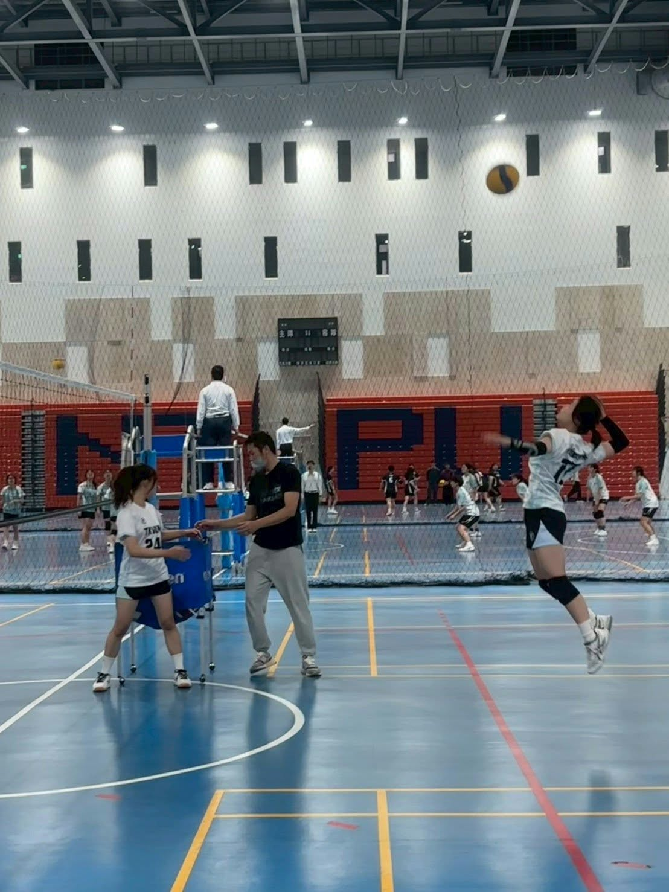

嗨，我是宋靜涵

我目前就讀資訊管理學系，之前念的是運動休閒相關科系，後來因為對程式和資料產生興趣而轉系。課餘時間我自學 Flutter 開發手機 App，也正在探索資料分析與 AI 應用的方向。
我正在培養的技能
- Flutter 手機 App 開發
- Python 資料處理與分析
- HTML 網頁結構設計
- Git 與 GitHub 版本控制
我做一個新專案的習慣
- 先寫下要解決的問題
- 整理需求與功能清單
- 做出最小可用版本
- 找朋友試用並修正
這學期的目標
| 項目 | 具體目標 | 預計完成時間 |
|---|---|---|
| 網頁開發 | 完成一個能上線的個人作品集網站 | 期末 |
| 資料分析 | 用 Python 分析一份排球比賽數據 | 期中後 |
| App 開發 | 用 Flutter 做出一個小工具 App | 寒假前 |
| 版本控制 | 每週固定 commit 並 push 到 GitHub | 每週 |
推薦連結
我學 App 開發最常查的地方：Flutter 官方網站
想多認識我的背景，可以看看關於我這一頁。